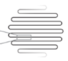

Quantum Nanodevices Lab
Home
Research
Team
Student Projects
Publications
Openings
Gallery
Contact
Menu

Home
Research
Team
Student Projects
Publications
Openings
Gallery
Contact
Publications
For the complete list of publications, please check my
Google Scholar Profile 🎓
2025
K. Soroush,
et al.
Post-processed estimation of quantum state trajectories.
arXiv preprint
, arXiv:2510.16754 (2025).
B. Hua,
et al.
Towards entangling distant solid state spin qubits via mechanical resonators.
SMT
, 2025.
J. Gao,
et al.
From Pixels to Camera: Scaling Superconducting Nanowire Single-Photon Detectors for Imaging at the Quantum-Limit.
Nano Convergence
, 12.1 (2025): 49.
Z. Li,
et al.
Heterogeneous integration of silicon nitride and amorphous silicon carbide photonics.
APL Photonics
, 10.10 (2025).
W. Ji,
et al.
Compact Metasurface Terahertz Spectrometer.
Laser & Photonics Reviews
, 19.3, 2025: 2401290.
S Groeblacher,
et al.
Broadband, Low-mass, and High-reflectivity Metasurface-Enhanced Photonic Crystal Reflector
Patent
B. Rodriguez,
et al.
Magic Silicon Dioxide for Widely Tunable Photonic Integrated Circuits.
ACS Photonics
, 2025.
2024
I.E. Zadeh,
et al.
Superconducting Electronic Signal Output Circuit and Readout Array.
US Patent
, 18/706,522, 2024.
W. Ji,
et al.
Compact terahertz spectrometer based on a metasurface.
Millimeter, Submillimeter, and Far-Infrared Detectors and Instrumentation for Astronomy XII
, SPIE, 2024.
B. Lopez-Rodriguez,
et al.
Magic silicon dioxide for widely tunable integrated photonics.
arXiv preprint arXiv:2407.08480
, 2024.
B. Lopez-Rodriguez,
et al.
Large, deterministic and tunable thermo-optic shift for all photonic platforms.
Integrated Photonics Platforms III
, Vol. 13012, SPIE, 2024.
J. W. Los,
et al.
High-performance photon number resolving detectors for 850–950 nm wavelength range.
APL Photonics
, 9.6, 2024.
J. Chang,
et al.
Broadband, High-Reflectivity Dielectric Mirrors at Wafer Scale: Combining Photonic Crystal and Metasurface Architectures for Advanced Lightsails.
Nano Letters
, 2024.
F. Fung,
et al.
Towards a Programmable Spin-Mechanics Platform with Dynamic Qubit Transport.
Bulletin of the American Physical Society
, 2024.
2023
T. Hummel,
et al.
Gated-and optical biasing for SNSPDs.
Frontiers in Optics
, Optica Publishing Group, 2023.
B. Lopez-Rodriguez,
et al.
High-quality amorphous silicon carbide for hybrid photonic integration deposited at a low temperature.
ACS Photonics
, 10.10, 2023, pp. 3748-3754.
W. Ji,
et al.
Compact Metasurface Terahertz Spectrometer.
arXiv preprint arXiv:2309.02341
, 2023.
J. Guo,
et al.
Active-feedback quantum control of an integrated low-frequency mechanical resonator.
Nature Communications
, 14.1, 2023, p. 4721.
W. Ji,
et al.
Recent advances in metasurface design and quantum optics applications with machine learning, physics-informed neural networks, and topology optimization methods.
Light: Science & Applications
, 12.1, 2023, p. 169.
J. Chang,
et al.
Superconducting single-photon detectors get hot.
Nature Nanotechnology
, 18.4, 2023, pp. 322-323.
J. Chang,
et al.
Nanowire-based integrated photonics for quantum information and quantum sensing.
Nanophotonics
, 12.3, 2023, pp. 339-358.
F. Fung,
et al.
Towards a high cooperativity spin-mechanical system with NV centers and high-Q silicon nitride nanobeams.
APS Division of Atomic, Molecular and Optical Physics Meeting Abstracts
, Vol. 2023, 2023.
2022
T. Hummel,
et al.
Nanosecond gating of superconducting nanowire single-photon detectors using cryogenic bias circuitry.
Optics Express
, 31.1, 2022, pp. 610-625.
J. Jia,
et al.
Effects of SiC content on the mechanical and thermophysical properties of 3D Cf/SiC–Al composites.
Ceramics International
, 48.14, 2022, pp. 20571-20578.
B. Lopez-Rodriguez,
et al.
Ultra-high system detection efficiency superconducting nanowire single-photon detectors for quantum photonics and life sciences.
CLEO: Applications and Technology
, Optica Publishing Group, 2022.
J. Chang,
et al.
Efficient mid-infrared single-photon detection using superconducting NbTiN nanowires with high time resolution in a Gifford-McMahon cryocooler.
Photonics Research
, 10.4, 2022, pp. 1063-1070.
2021
Y. Gan,
et al.
Low noise MgB2 hot electron bolometer mixer operated at 5.3 THz and at 20 K.
Applied Physics Letters
, 119.20, 2021.
I. Esmaeil Zadeh,
et al.
Superconducting nanowire single-photon detectors: A perspective on evolution, state-of-the-art, future developments, and applications.
Applied Physics Letters
, 118.19, 2021.
J. Chang,
et al.
Detecting telecom single photons with 99.5− 2.07+ 0.5% system detection efficiency and high time resolution.
APL Photonics
, 6.3, 2021.
J. Chang
Detecting Single Photons with Superconducting Nanowires.
2021.
2020
S. Steinhauer,
et al.
Superconducting Nanowire Devices for Light Detection at the Single-Photon Level.
Proceedings
, Vol. 60, No. 1, MDPI, 2020.
C. Cirillo,
et al.
Superconducting nanowire single photon detectors based on disordered NbRe films.
Applied Physics Letters
, 117.17, 2020.
I. Esmaeil Zadeh,
et al.
Efficient single-photon detection with 7.7 ps time resolution for photon-correlation measurements.
ACS Photonics
, 7.7, 2020, pp. 1780-1787.
I. Esmaeil Zadeh,
et al.
PIZZICATO: Picosecond Scintillator Timing with Superconducting Nanowire Single-Photon Detectors.
2020.
2019
J. Chang,
et al.
Multimode-fiber-coupled superconducting nanowire single-photon detectors with high detection efficiency and time resolution.
Applied Optics
, 58.36, 2019, pp. 9803-9807.
J. Zichi,
et al.
Optimizing the stoichiometry of ultrathin NbTiN films for high-performance superconducting nanowire single-photon detectors.
Optics Express
, 27.19, 2019, pp. 26579-26587.
R. Gourgues,
et al.
Superconducting nanowire single photon detectors operating at temperature from 4 to 7 K.
Optics Express
, 27.17, 2019, pp. 24601-24609.
J. Jia,
et al.
Effect of tungsten based coating characteristics on microstructure and thermal conductivity of diamond/Cu composites prepared by pressueless infiltration.
Ceramics International
, 45.8, 2019, pp. 10810-10818.
J. Chang,
et al.
Large diameter superconducting nanowire single photon detectors with high efficiency and high time resolution.
Quantum Optics and Photon Counting 2019
, Vol. 11027, SPIE, 2019.
J. Chang,
et al.
Superconducting nanowire single photon detector with high efficiency and time resolution for multimode fiber coupling.
CLEO: QELS_Fundamental Science
, FF1A.2, 2019/5/5.